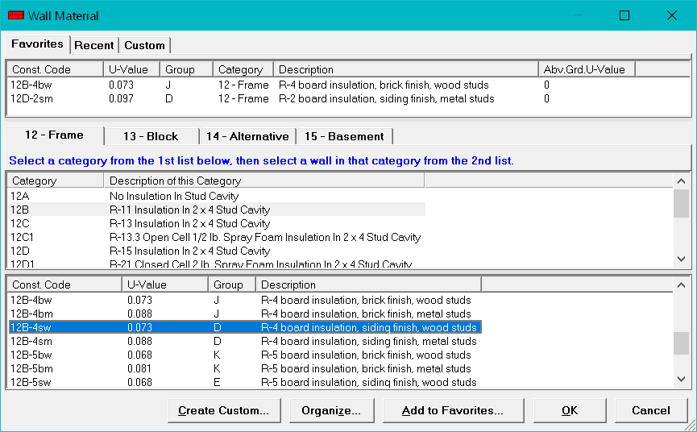

Wall Material Dialog |
  
|
Wall Material Dialog |
|
Click the button beside the Wall Material input on the Room Data or Default Room Data window to open this dialog.

Favorites Tab: Lists the walls you have added to your Favorites collection. Double click an item in the list to select that wall.
Recent Tab: Lists your most recently selected wall materials. Double click an item in the list to select that wall.
Custom Tab: Lists the custom walls that you have created by clicking the Create Custom button. Double click an item in the list to select that wall.
Main Category Tabs: Determines the type of wall categories listed in the category list (the one in the middle of this window). Different wall categories have different heating and cooling load characteristics.
Sub Category List: The middle list on this dialog. Displays the sub categories available under the current main category tab. Click on an item in the list and the bottom list will show the various wall items available in that sub category.
Wall Item List: The bottom list on this dialog. Displays the walls available in the current sub category. Double click on a wall in this list to select it. Click any of the column headers to sort the list by that column. Click the same column again to reverse the sort order.
Create Custom Button: Opens the Custom Wall dialog, which lets you enter a custom wall material to be added to your list of Custom walls. Custom walls are always the bottom item in any of the sub category lists.
Organize Button: Displays a menu that lets you select to organize your Favorites, Recent or Custom walls.
Add To Favorites Button: Adds the currently selected wall to your Favorites list.
OK Button: Copies the currently selected wall back to the Room Data or other window and closes this dialog.
Cancel Button: Closes this dialog without copying a wall to the Room Data or other window.